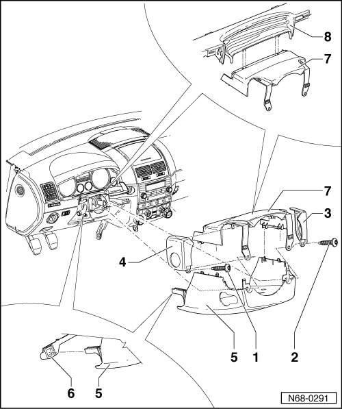

Steering Column Cover: Service and Repair
Steering Column Trim
Removing
- Remove driver airbag unit --> [ Driver Airbag ] Driver Airbag
- Remove steering wheel --> [ Steering Wheel ] Steering Wheel
- Remove bolts - 1 - and - 2 -.
- Remove side trim - 3 - and - 4 -.
Vehicles with manually adjustable steering columns
- Remove the 2 bolts on locking lever.
- Remove handle from locking lever.
All vehicles
- Separate lower steering column cover - 5 - from steering column trim - 7 - and pull it out of side mountings - 6 -.
Vehicles with electrically adjustable steering columns
- Disconnect adjustment switch in lower steering column cover - 5 - from wiring harness.
All vehicles
- Separate steering column trim - 7 - from the bellows - 8 -.

Installing
- Perform the steps used for removal in reverse order.